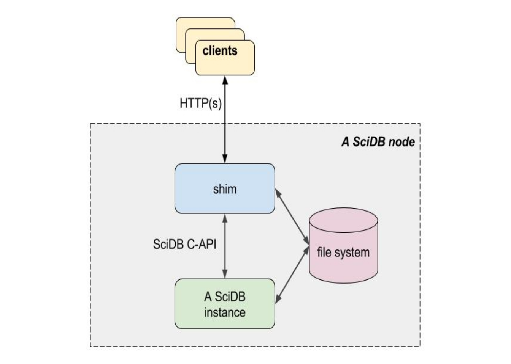

Shim is a web service that exposes a very simple API for clients to interact with SciDB over HTTP connections. The API consists of a small number of services (described in detail below), including: /new_session, /release_session, /execute_query, /cancel, /read_lines, /read_bytes, /upload_file, /upload, /version.

Shim clients begin by requesting a session ID from the service, then running a query and releasing the session ID when done. Session IDs are distinct from SciDB query IDs–a shim session ID groups a SciDB query together with server resources for input and output to the client.
Shim runs as a system service or can be invoked directly from the command line. See the shim manual page for command-line options (type man shim from a terminal). Service configuration is determined by the /var/lib/shim/conf configuration file. The default conf file is a sample that displays the default configuration options, which are listed as one key=value pair per line. Available options include:
#ports=8080,8083s
#scidbhost=localhost
scidbport=1239
instance=0
tmp=/home/scidb/scidbdata/000/0/tmp
#user=root
#max_sessions=50
#timeout=60
#aio=1Each option is described below.
Shim listens on default ports 8080 (open, not encrypted), and 8083 (TLS encrypted) on all available network interfaces. Ports and listening interfaces are configured with the command line ‘-p’ option or with the ‘ports=’ option in the /var/lib/shim/conf file when shim is run as a service. The ports/interface specification uses the following syntax:
[address:]port[s][,[address:]port[s]][,...]where:
Here are some examples of possible port configurations:
| 5555s | Listen only on port 5555 (TLS/SSL). | |
| 127.0.0.1:8080,1234s | List on port 8080 but only on the local loopback interface; listen on port 1234(TLS/SSL) on all interfaces. |
In most of the cases, Shim runs on the same computer as a SciDB coordinator. Set the ‘scidbport’ option to select the coordinator database port to locally connect to. The default SciDB database port value is 1239 (see the SciDB configuration manual for more information). Since any SciDB instance can act as a query coordinator, it is possible to configure multiple shim services, for example one shim service per computer IP address.
In special cases, Shim can run on a different computer that the SciDB coordinator. For these cases, set the scidbhost option to the hostname or IP of the computer on which the SciDB coordinator runs. Still, a temporary I/O space shared between the computer running Shim and the computer running the SciDB coordinator is needed (see Temporary I/O Space section below).
Set the SciDB instance number to use as a query coordinator. Make sure that this option is set together with the corresponding SciDB port number for the instance, and also set a corresponding temporary I/O location that the instance has read/write access to.
Shim’s default behavior caches the output of SciDB queries in files on the SciDB server; set that file directory location with the config file tmp option or the command-line -t argument. This temporary directory is also used to upload data from clients over the http connection for input into SciDB. Select a directory that is writable by the shim user (see the user option).
If you install shim from an RPM or Debian package as a service, the package will configure shim to use a SciDB data directory for temporary storage. You can edit the config file and restart shim to change that default.
The user that the shim service runs under (shim can run as a non-root user).
Set the maximum number of concurrent shim sessions, beyond which clients receive an HTTP ‘resource unavailable’ error.
Set the time in seconds after which an inactive session is considered timed out and a candidate for resource de-allocation. After sessions time out their resources are not freed unless the need to be to satisfy additional session demands. See the lazy timeout section below. Active sessions that are waiting on SciDB query results or transferring data are not subject to timeout and may run indefinitely.
Set aio=1 in the config file to enable fast AIO save using the SciDB aio_tools plugin.
Shim supports TLS/SSL encryption. Packaged versions of shim (RPM and Debian packages) generate a self-signed certificate and 4096-bit RSA key when shim is installed. The certificate is placed in /var/lib/shim/ssl_cert.pem. If you would prefer to use a different certificate, replace the automatically generated one.
Examples use the URL http://localhost:8080 or https://localhost:8083 (TLS) below. Parameters are required unless marked optional. All shim API services support CORS, see http://www.w3.org/TR/cors/ .
HTTP 1.1 clients or greater are required.
All HTTP query parameters are passed to the service as string values. They are limited to a maximum of 4096 characters unless otherwise indicated (a notable exception is the SciDB query string parameter, limited to 262,144 characters).
HTTP query string parameters that represent numbers have limits. Unless otherwise indicated whole-number values (session ID, number of bytes to return, etc.) are interpreted by shim as signed 32-bit integers and are generally limited to values between zero and 2147483647. Values outside that range will result in an HTTP 400 error (invalid query).
Possible responses for each URI are listed below. HTTP status code 200 always indicates success; other standard HTTP status codes indicate various errors. The returned data may be UTF-8 or binary depending on the request and is always returned using the generic application/octet-stream MIME type. Depending on the request, data may used chunked HTTP transfer encoding and may also use gzip content encoding.
Shim supports basic digest access authentication. (See https://en.wikipedia.org/wiki/Digest_access_authentication and the references therein for a good description of the method.) Enable digest access authentication by creating an .htpasswd file in shim’s default /var/lib/shim/wwwroot directory (the .htpasswd file must be located in shim’s wwwroot directory, which can be changed with the command line switch -r). The format of the file must be:
username1:password1
username2:password2
...Use plain text passwords in the file, and consider changing the permissions of the file to restrict access. Delete the .htpasswd file to disable basic digest access authentication.
Basic digest authentication works on plain or TLS-encrypted connections.
Shim optionally exposes both open and encrypted (HTTPS/TLS) services. You can provide a signed certificate in the /var/lib/shim directory. A generic random unsigned certificate is automatically generated for you if you install shim using either the .deb or .rpm package installer.
If SciDB authentication is enabled, valid user and password credentials need to be provided as parameters to the /new_session request. A SciDB connection is created using the provided credentials. This connection is used for any subsequent /execute_query calls, until the session is released using /release_session or an HTTP 5xx error (critical error) occurs. The connection and the session remain valid after HTTP 4xx errors (e.g., syntax errors).
/new_session
/execute_query
/read_lines or /read_bytes
/release_sessionThe R examples below use the httr package. We try to illustrate API calls with real examples using either curl or R. See https://github.com/Paradigm4/shim/tree/master/tests for additional examples.
| DESCRIPTION | Print the shim code version string | ||||
| METHOD | GET | ||||
| PARAMETERS | |||||
| RESPONSE |
|
| DESCRIPTION | Request a new HTTP session from the service. | ||||||
| METHOD | GET | ||||||
| PARAMETERS |
|
| DESCRIPTION | Release an HTTP session. | ||||||
| METHOD | GET | ||||||
| PARAMETERS |
|
| DESCRIPTION | Execute a SciDB AFL query. | ||||||||||||||
| METHOD | GET | ||||||||||||||
| PARAMETERS |
|
| DESCRIPTION | Cancel a SciDB query associated with a shim session ID. | ||||
| METHOD | GET | ||||
| PARAMETERS |
|
| DESCRIPTION | Read text lines from a query that saves its output. | ||||||
| METHOD | GET | ||||||
| PARAMETERS |
|
| DESCRIPTION | Read bytes lines from a query that saves its output. | ||||||
| METHOD | GET | ||||||
| PARAMETERS |
|
| DESCRIPTION | Upload data to the HTTP service using a basic POST method. | ||||||||
| METHOD | POST | ||||||||
| PARAMETERS |
|
Shim limits the number of simultaneous open sessions. Absent-minded or malicious clients are prevented from opening too many new sessions repeatedly without closing them (which could eventually result in denial of service). Shim uses a lazy timeout mechanism to detect unused sessions and reclaim them. It works like this:
The above scheme is called lazy as sessions are only harvested when a new session request is unable to be satisfied. Until that event occurs, sessions are free to last indefinitely.
Shim does not protect against uploading gigantic files nor from running many long-running SciDB queries. The service may become unavailable if too many query and/or upload operations are in flight; an HTTP 503 (Service Unavailable) error code is returned in that case.
Copyright (C) 2016-2018, Paradigm4.